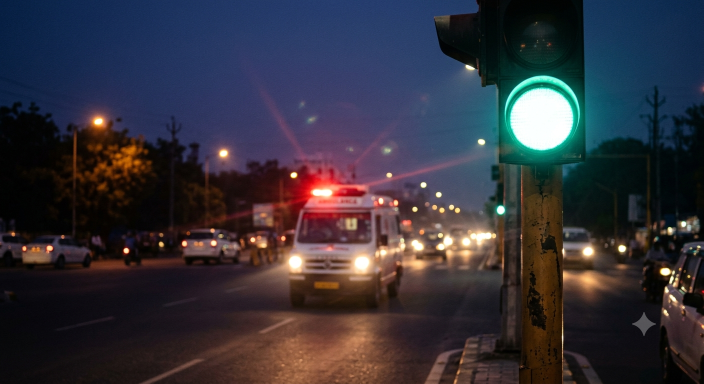
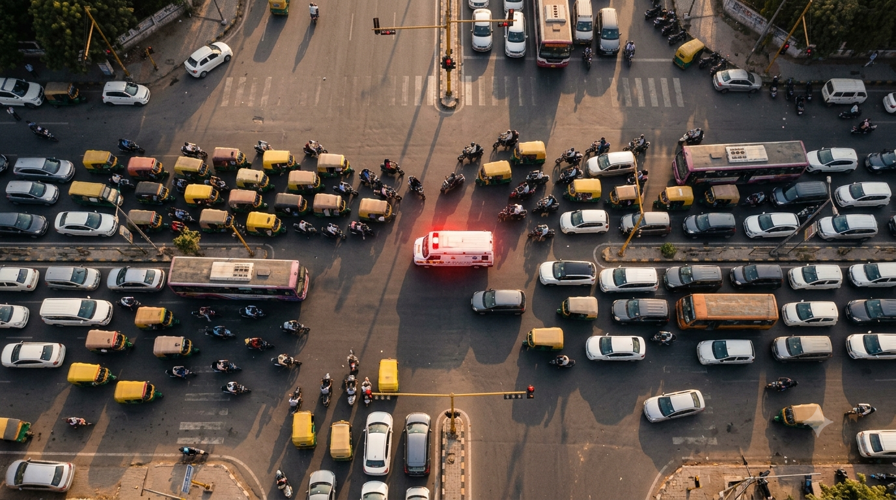
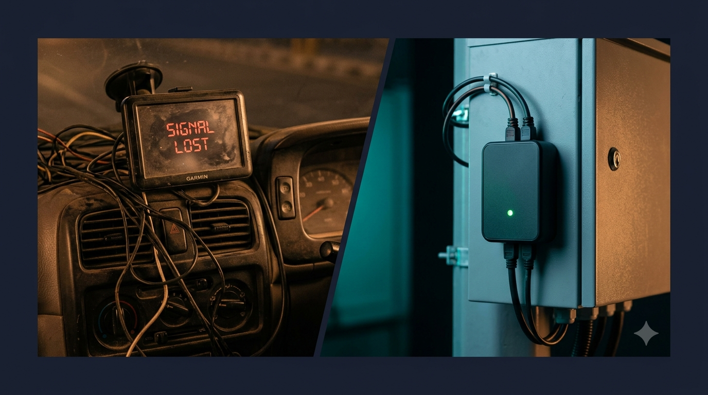
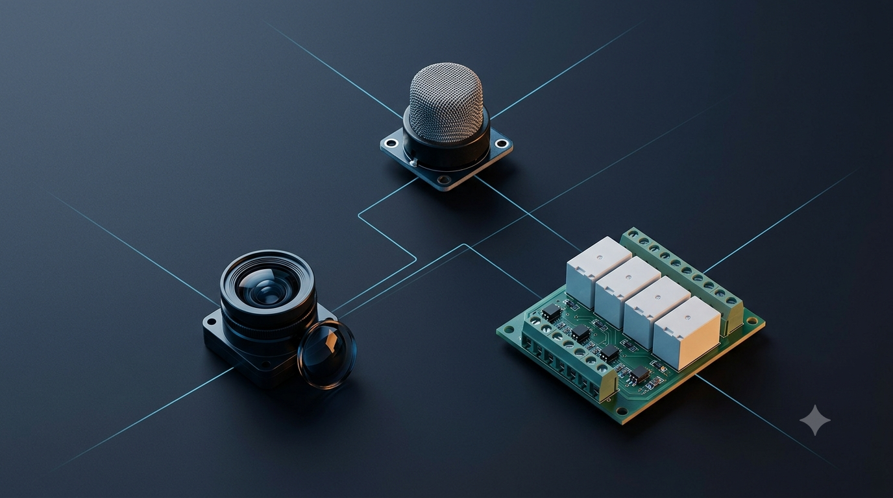
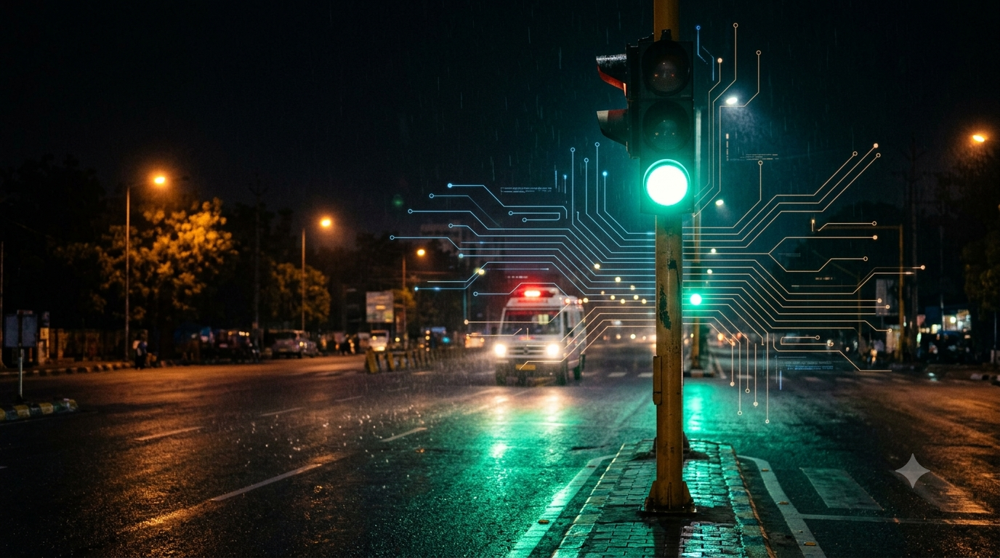
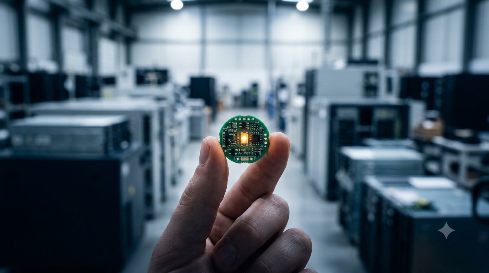
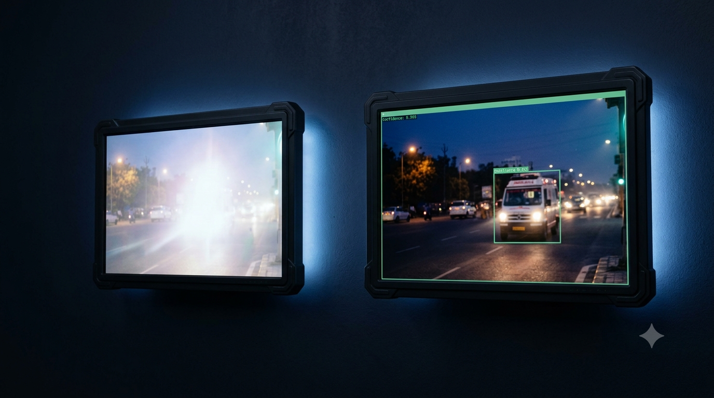
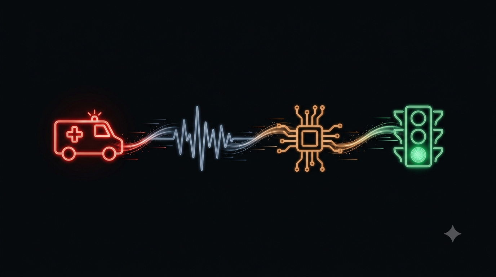

A compact retrofit device that clears ambulances through traffic in seconds — not minutes. Dual-confirm detection, zero infrastructure change, under ₹3,500.

Every day, emergency vehicles lose 3–5 minutes at each junction — cumulative delays across hospital corridors turn survivable emergencies into fatal outcomes.
Indian junctions run on rigid, pre-timed cycles with zero emergency vehicle pre-emption capability.
Lost time compounds across arterial routes, destroying the vital golden hour for trauma and cardiac patients.
Over 2.4 lakh lives lost annually in India due to emergency transit delays on congested urban corridors.

Imported adaptive solutions require ₹50 Lakhs+ per junction. NODI-Seconds retrofits existing signal controllers in minutes.

Two independent physical domains must agree before triggering — acoustic mic captures siren harmonics while CCTV confirms ambulance visually.

Hardware bandpass filter isolates ambulance wail/yelp frequencies, rejecting loud horns and engine roar.
Identifies vehicle chassis silhouette, rooftop light-bar, and flashing beacon cadence via existing roadside CCTV.
Physically drives signal contacts with electrical interlocks. Opposing green signals are mechanically impossible.
A roadside microphone hears the siren. Existing CCTV verifies the ambulance. Only then does the relay reserve a safe green path.

The microphone isolates ambulance harmonics.
CCTV confirms the ambulance in view.
One sensor alone cannot change the signal.
Cross traffic receives a three-second yellow.
The normal cycle returns after the ambulance passes.
Three independent physical and timing mechanisms ensure no junction can ever enter a hazardous or conflicting signal state.
4-channel relay board is electrically interlocked. Opposing green signals are mechanically impossible under all circumstances.
Guarantees safe deceleration for cross-traffic. Never abruptly cuts off moving vehicles, preventing panic braking and collisions.
Hardware watchdog monitors heartbeat. If device loses power, disconnects, or crashes, junction returns to normal in 5 seconds.
Under ₹3,500 per junction — deployable on India's millions of existing fixed-time signals without civil works or controller replacement.

Directional acoustic microphone + CCTV edge vision integration + 4-channel relay board + hardware watchdog. Attaches to existing signal cabinets in 30 minutes with zero civil works.
Complete intersection overhaul requiring foreign proprietary controllers, underground road-induction loops, imported optical beacons, and recurring annual maintenance license fees.
Why camera-based AI detection outperforms simple light-flash sensors — eliminating false alarms from police beacons and headlights.

From siren sound to green light — the four synchronized phases of the NODI-Seconds detection-to-actuation lifecycle.

Ambulance approaches within 200m zone. Siren blares acoustic signature while emergency roof beacons flash.
Roadside microphone isolates 600–1200 Hz siren harmonics while junction camera validates vehicle silhouette.
Microcontroller cross-validates acoustic frequency match with visual detection confidence (>95%) before trigger.
Controller energizes 3s Yellow clearance on cross-lanes, then locks Green for seamless ambulance transit.
Deployable on India's millions of existing fixed-time signals — preserving the golden hour for thousands of lives at a fraction of imported cost.